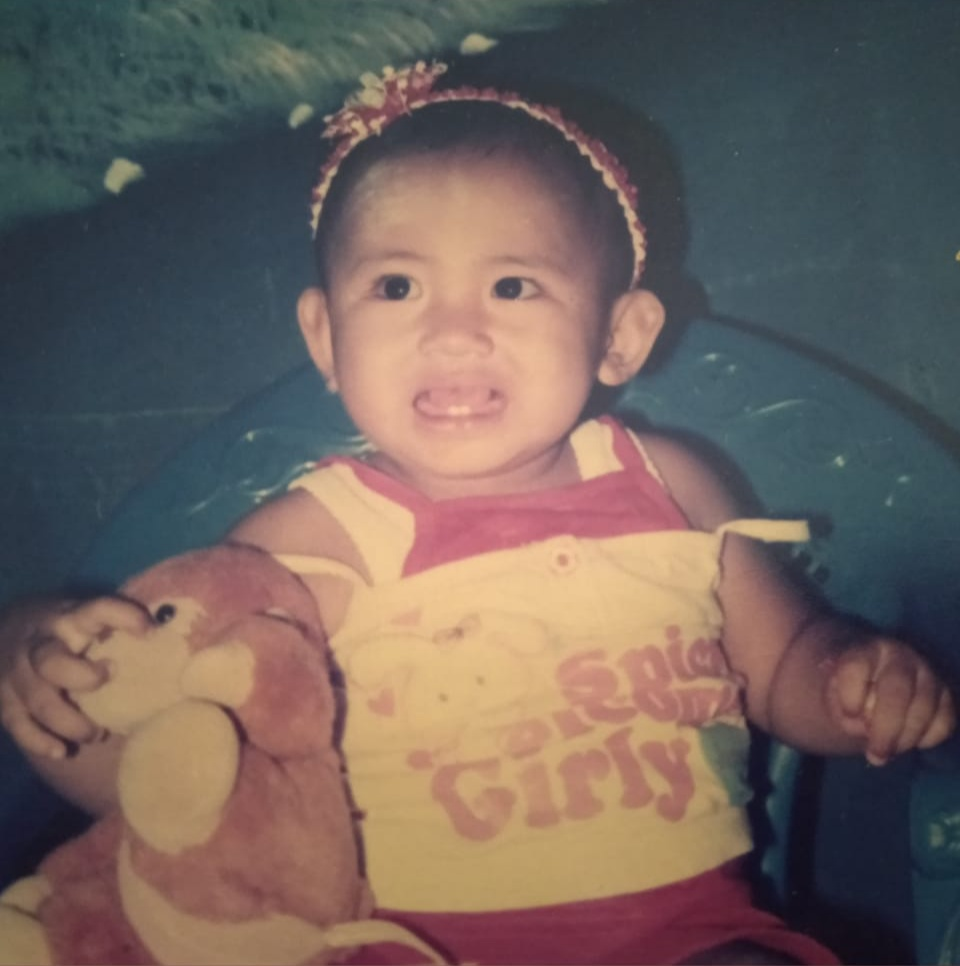
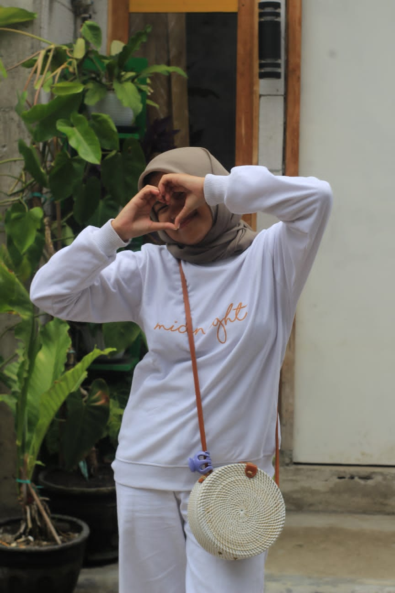
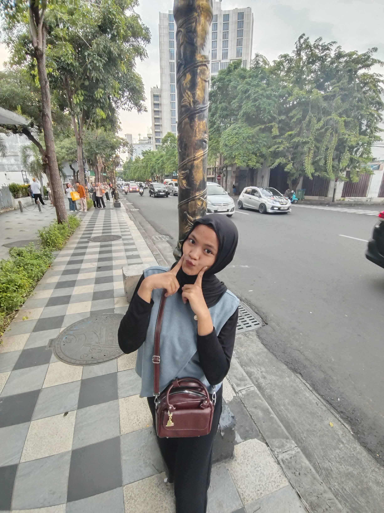
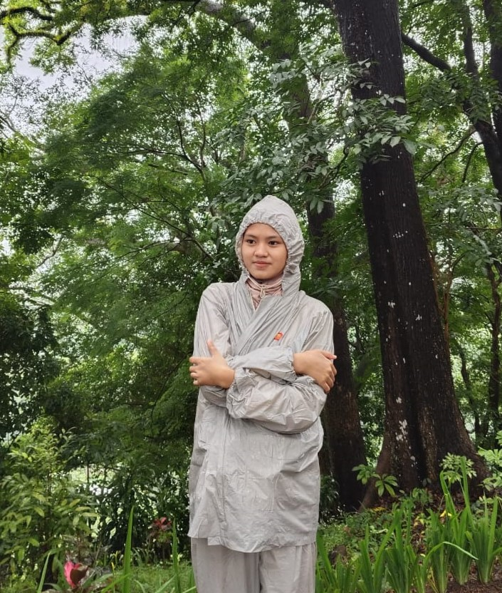
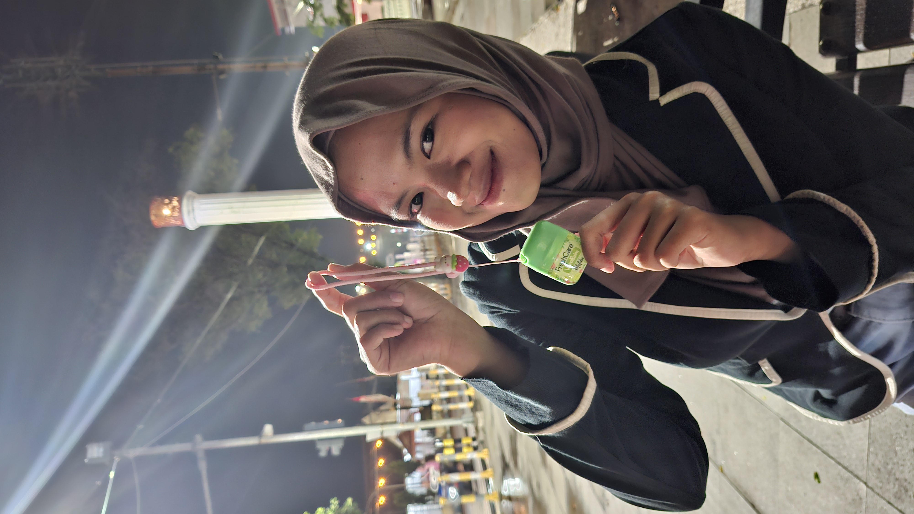
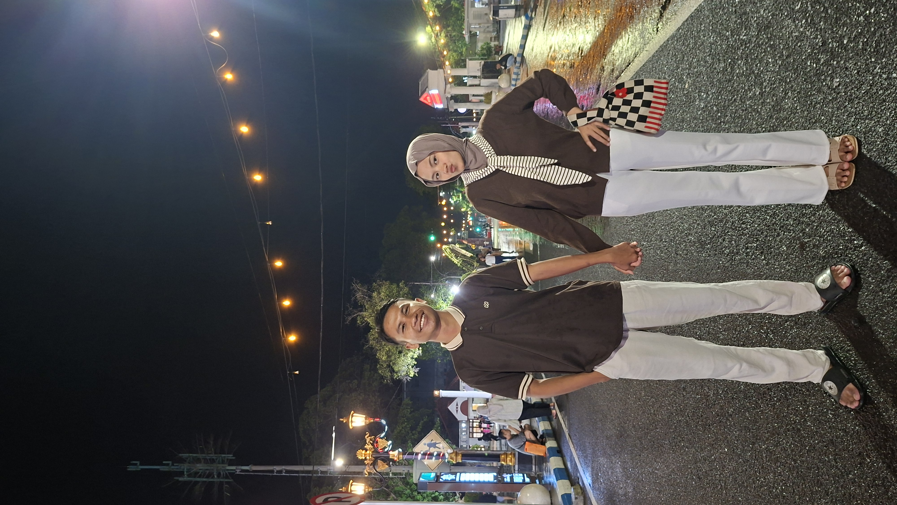

Ga kerasa yaa
Tiba tiba kamu udah sampai di umur ini —
Dan aku seneng bisa liat semuanya dari dekat

Dinda kecil
Kalau lihat foto ini sekarang, rasanya waktu memang jalan cepet banget ya. Tiba-tiba aja versi kecil di foto ini udah tumbuh sampai sejauh sekarang — udah ngelewatin banyak hal dan pelan-pelan jadi seseorang yang sekarang aku kenal.
Dan entah kenapa, rasanya beberapa hal dari kamu memang ga pernah berubah.
Masih jadi orang yang peduli terlalu dalam, masih banyak mikir diam-diam, dan masih berusaha baik bahkan waktu diri sendiri lagi capek.
Ada tahun-tahun yang berat.
Kayaknya ada banyak hal yang akhir-akhir ini bikin kamu capek ya — dan mungkin ga semuanya bisa kamu ceritain dengan gampang juga. Tapi sejauh ini, kamu tetap berhasil jalan sampai sini.
Yang tumbuh
diam-diam



Hal-hal kecil
yang aku suka dari kamu
Kadang justru hal-hal kecil dari kamu yang paling sering kepikiran. Yang mungkin biasa aja buat kamu, tapi entah kenapa selalu nempel di kepala aku.
- i Aku suka waktu kamu ketawa sampai bener-bener lepas dan lupa jaim. Soalnya jarang banget lihat kamu sebebas itu — dan itu lucu banget buat dilihat.
- ii Kamu tuh selalu inget hal-hal kecil tentang orang yang kamu sayang. Hal yang mungkin orang lain anggap sepele — tapi kamu tetep simpen diingatan.
- iii Aku suka waktu kamu tiba-tiba cerita panjang tentang sesuatu, lalu aku cuma dengerin kamu ngomong terus tanpa sadar waktu jalan — Karena entah kenapa, cara kamu cerita itu selalu bikin aku betah buat stay dan dengerin sampai habis.
- iv Kamu kalau ngomelin aku galak banget. Tapi anehnya — bukannya takut aku malah suka lihat ekspresi kamu waktu begitu.
- v Kamu tuh selalu inget hal-hal kecil tentang orang yang kamu sayang. Hal yang mungkin orang lain anggap sepele, tapi kamu tetep simpen diingatan.
- vi Kadang yang bikin nyaman itu bukan kata-kata kamu, tapi fakta kalau kamu ada Dan menurut aku, itu lebih berarti dari banyak hal.
Kamu sering bilang kamu tidak tahu sudah cukup baik atau belum.
Tapi dari sini — kamu sudah lebih dari cukup sejak lama.
Kamu hanya belum percaya saja.
Aku ga pernah ngeliat kamu sebagai orang yang harus selalu sempurna — karena justru hal-hal kecil dan random dari kamu itu yang bikin kamu jadi diri kamu sendiri. Aku cuma suka cara kamu jadi diri sendiri, dengan semua hal kecil yang kadang bahkan kamu sendiri ga sadar.

Harapan kecil
untuk tahun ini
Bukan yang muluk-muluk. Yang realistis, yang benar-benar aku harapkan.
Aku ga berharap tahun ini jadi sempurna buat kamu — aku cuma berharap semuanya terasa sedikit lebih ringan dari sebelumnya.
Aku harap tahun ini kamu bisa punya lebih banyak hari dimana kepala kamu ga serame biasanya — walaupun hidup tetep capek kadang.
Aku harap kamu bisa istirahat tanpa ngerasa harus terus kuat atau terus ngelakuin sesuatu — karena kadang diem sebentar juga udah cukup.
Aku harap selalu ada hal kecil yang bisa bikin kamu excited lagi — bahkan di tengah hari-hari yang lagi capek.
Semoga di akhir hari-hari sulitnya, kamu ingat bahwa kamu sudah melewati yang lebih berat dari ini.
Dan semoga kamu tahu ada orang yang dengan senang hati ada di sampingmu, apapun yang terjadi.

Selamat ulang tahun,
INCES SAYANG
Dua puluh satu tahun itu panjang ya — dan aku yakin ga semua harinya mudah buat kamu jalanin. Ada banyak hal yang mungkin bikin kamu berubah pelan-pelan, bikin kamu belajar banyak hal dengan cara yang ga selalu enak, sampai akhirnya ngebentuk kamu jadi diri kamu yang sekarang.
Dari semua perjalanan yang udah kamu lewatin sampai sejauh ini, untungnya aku bisa ada di salah satu bagian kecilnya.
dengan sayang, selalu —
Rafii Ganteng Banget